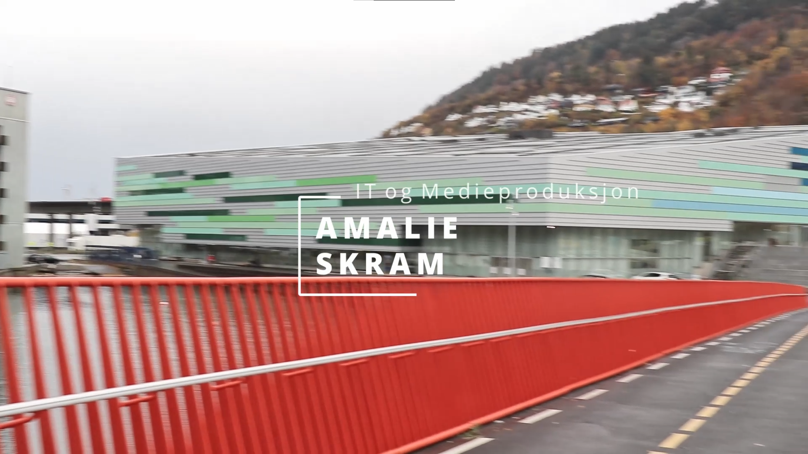

Konseptutvikling og programmering + Produksjon og historiefortelling
Reklamefilm
Vi skulle lage en reklamefilm for å reklamere for linjen vi går på.
17. nov. 2020

Naturfag
Supermat
Her skulle vi lage en fiksjonell "supermat" som inneholdt akkurat riktig mengde næringsstoffer og mineraler. Jeg lagde min 'råbar'.
30. okt. 2020

Teknologiforståelse + Produksjon og historiefortelling
Bildeserie
Denne oppgaven gikk ut på å fortelle en historie ved hjelp av bilder. Vi skulle ta og rediger 4 bilder og kunne fortelle en meningsfull historie ut i fra de. Jeg ville prøve å fortelle en historie om forsøpling, men det er selvfølgelig opp til enkeltpersonen å tolke historien.
18. sep. 2020
Konseptutvikling og programmering
Nettside
Den nettsiden du er på nå.
20. aug. 2020